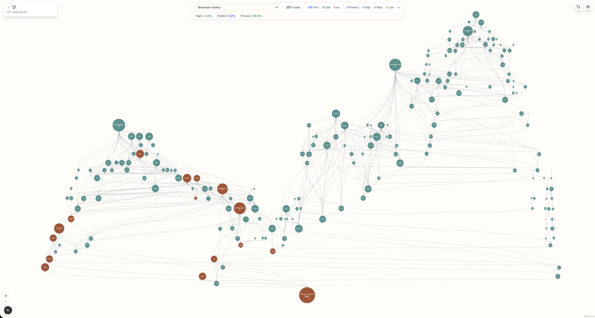
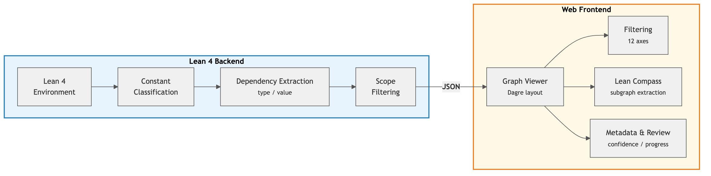

Develops Lean Atlas, a Lean 4 tool visualizing project dependency graphs to support human semantic review of formalizations.
Abstract
AI-driven autoformalization of mathematics is advancing rapidly. However, the type checker of a proof assistant guarantees only the logical correctness of proofs; it does not verify whether propositions and definitions faithfully capture their intended mathematical content. Consequently, AI-generated formal proofs can exhibit semantic hallucination-passing the type checker yet failing to express the intended mathematics. We propose a human-in-the-loop approach in which human scientists and AI collaboratively produce formal proofs, with humans responsible for the semantic verification of propositions and definitions. To realize this approach, we develop Lean Atlas, a Lean 4 tool that visualizes the dependency graph of a Lean 4 project as an interactive web viewer, enabling human scientists to grasp the overall structure of a formalization efficiently. Its core feature, Lean Compass, is an algorithm that, given a selected theorem set, automatically extracts the project-specific nodes whose semantic correctness can affect those target statements, thereby reducing the candidate set for semantic review in large-scale formalizations. We further define *aligned Lean code* as formalization code that has undergone human semantic verification, and propose it as a quality standard for AI-generated formalizations. We evaluate the tool on six Lean 4 formalization projects with different structural characteristics; proof-heavy projects (PrimeNumberTheoremAnd, Carleson, Brownian Motion) achieved 94-99% average node reduction, a 6-theorem milestone subset of FLT achieved 59.8%, mixed PhysLib 69.0%, and definition-heavy XMSS 27.3%. Lean Atlas is available as open-source software at https://github.com/NyxFoundation/lean-atlas .
Problem
AI-generated formal proofs can pass Lean's type checker yet fail to faithfully capture intended mathematical content (semantic hallucination). Humans need efficient tools to verify semantics in large-scale formalizations.
Approach
Lean Atlas is a Lean 4 tool that visualizes the dependency graph of a project as an interactive web viewer. Its core algorithm, Lean Compass, given a selected theorem set, automatically extracts the minimal set of project-specific nodes whose semantic correctness can affect those targets, reducing the review burden. The authors define aligned Lean code as code that has undergone human semantic verification.

Figure 1: Lean Atlas web viewer. Visualizing the review cone (227 nodes) of the main theorem IsBrownian_brownian in the Brownian Motion project. The orange nodes (14) are the nodes automatically extracted by Lean Compass as targets for semantic verification (93.8% reduction).

Figure 2: Architecture of Lean Atlas. The Lean 4 backend extracts and classifies the dependency graph, and the web frontend provides interactive visualization. Lean Compass automatically extracts, for a selected theorem set, the project-specific nodes whose semantic correctness can affect those target statements.
Results
On proof-heavy projects (PrimeNumberTheoremAnd, Carleson, Brownian Motion), Lean Compass achieves over 99% reduction in the review cone. On definition-heavy projects the reduction is smaller but still substantial, demonstrating that the tool scales to diverse project structures.